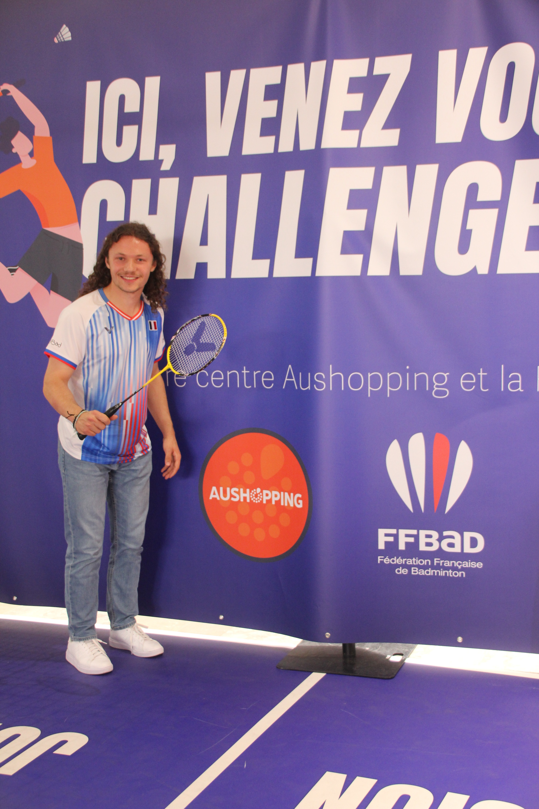

Je m'appelle Kilian
et j'anime vos événements !

Quelques animations


Une animation sur mesure,
professionnelle et dynamique
Je m'adapte à votre événement, à votre public et à l'ambiance souhaitée pour créer une animation fluide, vivante et engageante.
Improvisation
Chaque événement réserve son lot d'imprévus. Grâce à ma capacité d'improvisation, je m'adapte rapidement aux situations pour maintenir une animation fluide et naturelle.
Plusieurs casquettes
Animateur, présentateur ou maître de cérémonie, j'interviens sous différentes formes selon les besoins de votre événement pour assurer une prestation complète et cohérente.
Sur mesure
Chaque prestation est préparée avec vous pour coller à votre public, votre programme et votre univers. Pas de modèle générique : une animation pensée pour vous.
Comment je procède
Vous me contactez via le formulaire du site, par email ou par téléphone. Nous échangeons sur votre projet, le type d'événement, la date, le lieu et vos attentes.
Nous discutons plus en détail de votre projet afin de comprendre l'ambiance souhaitée, le public présent et le déroulement de l'événement.
Je vous envoie une proposition claire avec les détails de la prestation. Une fois validée, la date est réservée pour votre événement.
Avant l'événement, nous préparons ensemble les éléments importants : programme, interventions, timing, moments clés, messages à faire passer.
J'anime et présente votre événement en respectant le programme prévu tout en m'adaptant au public et aux imprévus pour garantir une ambiance fluide et dynamique.
Après l'événement, nous pouvons échanger sur le déroulement et votre retour afin d'améliorer encore les prochaines collaborations.
Les questions qui reviennent
Le tarif dépend du type d'événement, de sa durée, du lieu et des besoins spécifiques. Contactez-moi pour un devis personnalisé.
Les deux. Je prépare une trame solide en amont avec vous, puis je m'appuie sur l'improvisation pendant l'événement pour rester naturel et m'adapter au public.
Oui, j'interviens régulièrement comme maître de cérémonie : ouverture, transitions, présentations, remerciements et clôture.
C'est une partie essentielle du métier. Retard, changement de programme, problème technique : je m'adapte en direct pour maintenir le rythme de l'événement.
Oui, je travaille avec plaisir sur des collaborations régulières (saisons sportives, émissions, événements internes d'entreprise...).
Via le formulaire de la page contact, ou directement par email. Je réponds sous 24 à 48 h ouvrées.